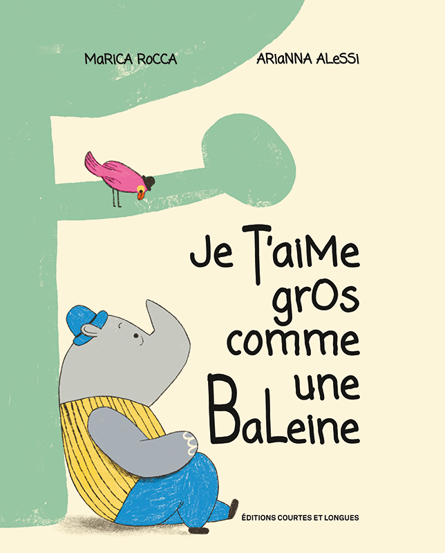

Edizione francese
Je t'aime gros comme une baleine
Un rinoceronte e un uccellino dal becco rosso vivono insieme, molto vicini ma non sempre allo stesso ritmo. Quando il rinoceronte è occupato, distratto o lontano, il suo amico sente il bisogno di dirgli quanto conta per lui. Formica, gatto, giraffa o balena: a seconda dei giorni, gli animali diventano un modo tenero e divertente per misurare l'amore, la mancanza e la voglia di stare insieme.
Acquisto su Amazon.fr. I collegamenti esterni si aprono in una nuova scheda.
Edizione francese dell'albo illustrato Mi manchi una balena, pubblicato in Italia da Lapis Edizioni. Storia e backstage del libro originale: Mi manchi una balena.